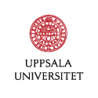

|

Highlights
Jingwei Dong has started his Postdoctoral position at my research group in January 2024. Welcome!
We have 1 PhD position in Automatic Control focusing on Distributed Voltage Control, together with KTH Royal Institute of Technology, deadline on January 30, 2024. See the job ad for how to apply!
On November 29, 2023, I have been appointed as a Wallenberg Academy Fellow 2023. Wallenberg Academy Fellows, the career program for young researchers launched by the Knut and Alice Wallenberg Foundation in cooperation with the Swedish Royal Academies in 2012, provides long-term funding for young, promising Swedish and foreign researchers from all academic fields. In 2023, 31 new researchers were appointed to the program.
The Swedish Research Council has funded our project "Probabilistic Methods for Secure Learning and Control" (2024-2027), as part of the special call for projects in cybersecurity.
The Swedish Energy Agency has funded our project ADVOLCANO - "Adverse Voltage Controllers’ Interactions in Active Distribution Networks", led by RISE together with KTH and our group.
A new movie from SSF (the Swedish Foundation for Strategic Research) describes our team's research in developing more secure control systems in a popular scientific way.
Vinnova has funded the project "Validating a System Development Kit for edge federated learning" (2023-2025), led by the start-up Scaleout Systems AB in collaboration with our group.
Alain Govaert has started his Postdoctoral position at my research group in September 2023. Welcome!
The Royal Society of Sciences at Uppsala has awarded the Lilly and Sven Thuréus prize 2023, technology-economics class, to André Teixeira for his work in "designing intelligent autonomous decision-making systems that are secure and resilient to external attacks (cyber threats)".
Daniel Arnstrom and Ruslan Seifullaev have started their Postdoctoral positions at my research group in August 2023. Welcome!
Lovisa Eriksson has started her PhD studies at my research group in August 2023. Welcome!
Our four recent papers have been accepted to the IEEE Conf. Decision and Control 2023, Singapore. They investigate problems in security and privacy of distributed consensus, secure state estimation, robust change detection, and detection of delay attacks. See their details at our lab's website.
Our three recent papers have been accepted to the IFAC World Congress 2023, Yokohama, Japan. They investigate problems in security and privacy via dynamic masking, optimal detector placement, and detection of delay attacks. See their details at our lab's website.
Check out my group's new website: Uppsala Secure Learning and Control Laboratory. We will announce new openings and opportunities there!
Our work was presented at the DISC Summer School 2022, held between June 27-30 in The Netherlands. Check the lecture slides and tutorial on the Publications page.
Selected Publications
| [J23] | S. C. Anand, A. M. H. Teixeira. “Risk-based Security Measure Allocation Against Actuator Attacks”. IEEE Open Journal of Control Systems, vol. 2, pp. 297-309, August 2023. (arXiv) (DOI, Open Access) |
| [C59] | M. Abdalmoaty, S. C. Anand, A. M. H. Teixeira. “Privacy and Security in Network Controlled Systems via Dynamic Masking”. In Proc. IFAC World Congress 2023. (arXiv) |
| [C58] | A. T. Nguyen, S. C. Anand, A. M. H. Teixeira, A. Medvedev. “Optimal Detector Placement in Networked Control Systems under Cyber-attacks with Applications to Power Networks”. Accepted to IFAC World Congress 2023. (arXiv) |
| [BC3] | A. M. H. Teixeira, “Security metrics for control systems,” in Safety, Security and Privacy for Cyber-Physical Systems, R. M. Ferrari and A. M. H. Teixeira, Eds. Cham: Springer International Publishing, 2021. (pdf) |
| [C42] | M. S. Chong, H. Sandberg, and A. M. H. Teixeira. “A Tutorial Introduction to Security and Privacy for Cyber-Physical Systems”. In Proc. European Control Conference, Napoles, Italy, 2019. (pdf) |
| [J15] | R. Ferrari, A. M. H. Teixeira. “A Switching Multiplicative Watermarking Scheme for Detection of Stealthy Cyber-Attacks”. IEEE Transactions on Automatic Control, 2021. DOI: 10.1109/TAC.2020.3013850 (pdf) |
| [J7] | A. M. H. Teixeira, K. C. Sou, H. Sandberg, and K. H. Johansson. “Secure Control Systems: A Quantitative Risk Management Approach”. IEEE Control System Magazine, vol. 35, no. 1, pp. 24-25, Feb. 2015. DOI: 10.1109/MCS.2014.2364709 |
| [J5] | A. M. H. Teixeira, I. Shames, H. Sandberg, and K. H. Johansson. “A Secure Control Framework for Resource-Limited Adversaries”. Automatica, vol. 51, pp. 135-148, Jan. 2015. DOI: 10.1016/j.automatica.2014.10.067 (arXiv) |
|
|
list of all publications and support files
|